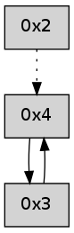

>> << IDX [start] -100 -25 -5 +0 +5 +25 +100 [240.202875137]
 Previous packets
----------------------------------------------------------------------
235.041420 beacon01(adaf) #0 coord=01,02,03,04 cycle=304.0ms assoc
-- color-indic=0 64 08 1c
235.051372 beacon02(adaf) #0 coord=01,02,03,04 cycle=304.0ms assoc 64 18 79
235.061373 beacon03(adaf) #0 coord=01,02,03,04 cycle=304.0ms assoc 64 57 d5
235.071373 beacon04(adaf) #0 coord=01,02,03,04 cycle=304.0ms assoc 64 89 88
235.083000 [Hello(2): seq=516 asym=4 sysInfo= stat=4:11,0,0,0]
----------------------------------------------------------------------
235.385515 beacon01(adaf) #0 coord=01,02,03,04 cycle=304.0ms assoc
-- color-indic=0 64 e6 56
235.395468 beacon02(adaf) #0 coord=01,02,03,04 cycle=304.0ms assoc 64 f6 33
235.405467 beacon03(adaf) #0 coord=01,02,03,04 cycle=304.0ms assoc 64 b9 9f
235.415467 beacon04(adaf) #0 coord=01,02,03,04 cycle=304.0ms assoc 64 67 c2
235.427089 [Hello(4): seq=18 sym=3 sysInfo= stat=3:2,0,0,0]
----------------------------------------------------------------------
235.729613 beacon01(adaf) #0 coord=01,02,03,04 cycle=304.0ms assoc
-- color-indic=0 64 d2 76
235.739565 beacon02(adaf) #0 coord=01,02,03,04 cycle=304.0ms assoc 64 c2 13
235.749566 beacon03(adaf) #0 coord=01,02,03,04 cycle=304.0ms assoc 64 8d bf
235.759567 beacon04(adaf) #0 coord=01,02,03,04 cycle=304.0ms assoc 64 53 e2
235.771185 [Hello(2): seq=517 asym=4 sysInfo= stat=4:12,0,0,0]
----------------------------------------------------------------------
236.073710 beacon01(adaf) #0 coord=01,02,03,04 cycle=304.0ms assoc
-- color-indic=0 64 3c 3c
236.083664 beacon02(adaf) #0 coord=01,02,03,04 cycle=304.0ms assoc 64 2c 59
236.093664 beacon03(adaf) #0 coord=01,02,03,04 cycle=304.0ms assoc 64 63 f5
236.103663 beacon04(adaf) #0 coord=01,02,03,04 cycle=304.0ms assoc 64 bd a8
236.115294 [Hello(4): seq=19 sym=3 sysInfo= stat=3:3,0,0,0]
----------------------------------------------------------------------
236.417806 beacon01(adaf) #0 coord=01,02,03,04 cycle=304.0ms assoc
-- color-indic=0 64 0e e3
236.427759 beacon02(adaf) #0 coord=01,02,03,04 cycle=304.0ms assoc 64 1e 86
236.437759 beacon03(adaf) #0 coord=01,02,03,04 cycle=304.0ms assoc 64 51 2a
236.447761 beacon04(adaf) #0 coord=01,02,03,04 cycle=304.0ms assoc 64 8f 77
236.459388 [Hello(2): seq=518 asym=4 sym= sysInfo= stat=4:13,0,0,0]
----------------------------------------------------------------------
236.761903 beacon01(adaf) #0 coord=01,02,03,04 cycle=304.0ms assoc
-- color-indic=0 64 e0 a9
236.771857 beacon02(adaf) #0 coord=01,02,03,04 cycle=304.0ms assoc 64 f0 cc
236.781856 beacon03(adaf) #0 coord=01,02,03,04 cycle=304.0ms assoc 64 bf 60
236.791855 beacon04(adaf) #0 coord=01,02,03,04 cycle=304.0ms assoc 64 61 3d
236.803484 [Hello(4): seq=20 sym=3 sysInfo= stat=3:4,0,0,0]
----------------------------------------------------------------------
237.106000 beacon01(adaf) #0 coord=01,02,03,04 cycle=304.0ms assoc
-- color-indic=0 64 7b 55
237.115953 beacon02(adaf) #0 coord=01,02,03,04 cycle=304.0ms assoc 64 6b 30
237.125954 beacon03(adaf) #0 coord=01,02,03,04 cycle=304.0ms assoc 64 24 9c
237.135954 beacon04(adaf) #0 coord=01,02,03,04 cycle=304.0ms assoc 64 fa c1
237.147581 [Hello(2): seq=519 asym=4 sysInfo= stat=4:14,0,0,0]
----------------------------------------------------------------------
237.450097 beacon01(adaf) #0 coord=01,02,03,04 cycle=304.0ms assoc
-- color-indic=0 64 95 1f
237.460049 beacon02(adaf) #0 coord=01,02,03,04 cycle=304.0ms assoc 64 85 7a
237.470049 beacon03(adaf) #0 coord=01,02,03,04 cycle=304.0ms assoc 64 ca d6
237.480050 beacon04(adaf) #0 coord=01,02,03,04 cycle=304.0ms assoc 64 14 8b
237.491679 [Hello(4): seq=21 sym=3 sysInfo= stat=3:5,0,0,0]
----------------------------------------------------------------------
237.794195 beacon01(adaf) #0 coord=01,02,03,04 cycle=304.0ms assoc
-- color-indic=0 64 a7 c0
237.804147 beacon02(adaf) #0 coord=01,02,03,04 cycle=304.0ms assoc 64 b7 a5
237.814147 beacon03(adaf) #0 coord=01,02,03,04 cycle=304.0ms assoc 64 f8 09
237.824149 beacon04(adaf) #0 coord=01,02,03,04 cycle=304.0ms assoc 64 26 54
237.835785 [Hello(2): seq=520 asym=4 sysInfo= stat=4:15,0,0,0]
----------------------------------------------------------------------
238.138292 beacon01(adaf) #0 coord=01,02,03,04 cycle=304.0ms assoc
-- color-indic=0 64 49 8a
238.148244 beacon02(adaf) #0 coord=01,02,03,04 cycle=304.0ms assoc 64 59 ef
238.158245 beacon03(adaf) #0 coord=01,02,03,04 cycle=304.0ms assoc 64 16 43
238.168244 beacon04(adaf) #0 coord=01,02,03,04 cycle=304.0ms assoc 64 c8 1e
238.179866 [Hello(4): seq=22 sym=3 sysInfo= stat=3:6,0,0,0]
----------------------------------------------------------------------
238.482388 beacon01(adaf) #0 coord=01,02,03,04 cycle=304.0ms assoc
-- color-indic=0 64 80 31
238.492340 beacon02(adaf) #0 coord=01,02,03,04 cycle=304.0ms assoc 64 90 54
238.502341 beacon03(adaf) #0 coord=01,02,03,04 cycle=304.0ms assoc 64 df f8
238.512339 beacon04(adaf) #0 coord=01,02,03,04 cycle=304.0ms assoc 64 01 a5
238.523973 [Hello(2): seq=521 asym=4 sysInfo= stat=4:0,0,0,0]
----------------------------------------------------------------------
238.826484 beacon01(adaf) #0 coord=01,02,03,04 cycle=304.0ms assoc
-- color-indic=0 64 6e 7b
238.836436 beacon02(adaf) #0 coord=01,02,03,04 cycle=304.0ms assoc 64 7e 1e
238.846436 beacon03(adaf) #0 coord=01,02,03,04 cycle=304.0ms assoc 64 31 b2
238.856436 beacon04(adaf) #0 coord=01,02,03,04 cycle=304.0ms assoc 64 ef ef
238.868069 [Hello(4): seq=23 sym=3 sysInfo= stat=3:7,0,0,0]
----------------------------------------------------------------------
239.170585 beacon01(adaf) #0 coord=01,02,03,04 cycle=304.0ms assoc
-- color-indic=0 64 5c a4
239.211961 [Hello(3): seq=24 sym=4 sysInfo= stat=4:5,0,0,0]
----------------------------------------------------------------------
239.514682 beacon01(adaf) #0 coord=01,02,03,04 cycle=304.0ms assoc
-- color-indic=0 64 b2 ee
239.524634 beacon02(adaf) #0 coord=01,02,03,04 cycle=304.0ms assoc 64 a2 8b
239.534634 beacon03(adaf) #0 coord=01,02,03,04 cycle=304.0ms assoc 64 ed 27
239.544634 beacon04(adaf) #0 coord=01,02,03,04 cycle=304.0ms assoc 64 33 7a
239.556255 [Hello(4): seq=24 sym=3 sysInfo= stat=3:8,0,0,0]
----------------------------------------------------------------------
239.858779 beacon01(adaf) #0 coord=01,02,03,04 cycle=304.0ms assoc
-- color-indic=0 64 29 12
239.868731 beacon02(adaf) #0 coord=01,02,03,04 cycle=304.0ms assoc 64 39 77
239.878732 beacon03(adaf) #0 coord=01,02,03,04 cycle=304.0ms assoc 64 76 db
239.888731 beacon04(adaf) #0 coord=01,02,03,04 cycle=304.0ms assoc 64 a8 86
239.900368 [Hello(3): seq=25 sym=4 sysInfo= stat=4:5,0,0,0]